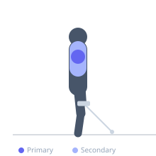
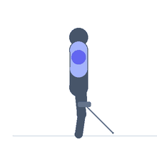

Exercise guide / Single-Arm Cable Lateral Raise
Single-Arm Cable Lateral Raise
The single-arm cable lateral raise is a unilateral shoulder isolation exercise using a low-pulley cable. With the cable running across the body from the opposite side, constant tension is maintained on the lateral deltoid throughout the entire arc — including at the top where dumbbell lateral raises lose tension. This makes it mechanically superior for lateral deltoid isolation compared to free-weight raises.
Primary muscles
deltoid lateral
Secondary muscles
deltoid anterior
trapezius upper
supraspinatus
Stabilizers
internal oblique
transverse abdominis
Equipment
Cable Machine (Low Pulley)
Optional
Cable Machine (Dual Pulley / Functional Trainer)


Starting position
- Stand beside a low-pulley cable machine, holding the handle in the hand furthest from the machine (the cable crosses in front of the body). The working arm begins at the side, slightly in front of the hip.
Setup
- Set the cable pulley to the lowest position and attach a single-handle D-ring. Stand perpendicular to the cable stack. Hold the handle in the hand on the opposite side from the machine.
Steps
- Step 1: Stand beside the cable machine, holding the handle in the far hand. Cable crosses in front of the body.
- Step 2: Begin with the arm at the side, slightly in front of the hip. Slight elbow bend.
- Step 3: Exhale and raise the arm upward and outward in a lateral arc to shoulder height.
- Step 4: Pause briefly at the top, then inhale and lower the arm back to the start. Complete all reps, then switch sides.
Coaching cues
- Lead with the elbow, not the hand — keep the elbow slightly higher than the wrist
- Think about pouring water from a jug at the top — slight internal rotation keeps the shoulder safe
Breathing
- Exhale as you raise; inhale as you lower.
Range of motion
- Raise from hip/side to shoulder height; return controlled.
Tempo
- 2-1-2-0
Common mistakes
- Shrugging the traps as the arm rises — consciously depress the shoulder during the raise
- Raising too far above shoulder height into impingement range
Safety
- Stop the raise at or just above shoulder height unless mobility allows pain-free movement beyond
Training
- hypertrophy: 10–20 reps
- endurance: 15–25 reps
- hypertrophy: 3–4 sets
- endurance: 2–3 sets
- Rest: {'hypertrophy': 60, 'endurance': 45}